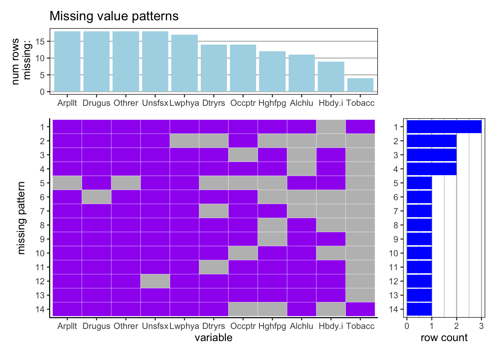

Chapter 4 Missing values
4.1 question 1
First take a look at our original data set:
## # A tibble: 6 × 11
## measure location sex age cause rei metric year val upper lower
## <chr> <chr> <chr> <chr> <chr> <chr> <chr> <dbl> <dbl> <dbl> <dbl>
## 1 Deaths Global Both All Ages Trachea… Air p… Rate 2019 5.01 6.33 3.72
## 2 Deaths Global Both All Ages Colon a… Tobac… Rate 2019 1.85 2.50 1.23
## 3 Deaths Global Both All Ages Colon a… Alcoh… Rate 2019 1.30 1.64 0.990
## 4 Deaths Global Both All Ages Colon a… High … Rate 2019 1.26 2.75 0.308
## 5 Deaths Global Both All Ages Colon a… High … Rate 2019 1.11 1.76 0.605
## 6 Deaths Global Both All Ages Colon a… Dieta… Rate 2019 4.73 5.71 3.53Our original dataset is downloaded from the source https://ghdx.healthdata.org/. It shows the information about in the global scale in 2019, the death rates of each kind of cancer caused by different external risks for all ages. We can see that the dataset is not in a tidy format. There are many useless variables that only contains one value. So below we transformed the data into a tidy format using only the variables of our interests.
## Air pollution Tobacco Alcohol use
## Tracheal, bronchus, and lung cancer 5.007384 17.5615609 NA
## Colon and rectum cancer NA 1.8472622 1.302482
## Kidney cancer NA 0.3893515 NA
## Cervical cancer NA 0.3894900 NA
## Uterine cancer NA NA NA
## Bladder cancer NA 1.0018858 NA
## High fasting plasma glucose
## Tracheal, bronchus, and lung cancer 2.3140498
## Colon and rectum cancer 1.2611637
## Kidney cancer NA
## Cervical cancer NA
## Uterine cancer NA
## Bladder cancer 0.2949716
## High body-mass index Dietary risks
## Tracheal, bronchus, and lung cancer NA 0.9976335
## Colon and rectum cancer 1.1099461 4.7270238
## Kidney cancer 0.4097576 NA
## Cervical cancer NA NA
## Uterine cancer 0.4715473 NA
## Bladder cancer NA NA
## Low physical activity Occupational risks
## Tracheal, bronchus, and lung cancer NA 3.745323794
## Colon and rectum cancer 0.7580853 NA
## Kidney cancer NA 0.001015075
## Cervical cancer NA NA
## Uterine cancer NA NA
## Bladder cancer NA NA
## Unsafe sex Other environmental risks
## Tracheal, bronchus, and lung cancer NA 1.08179
## Colon and rectum cancer NA NA
## Kidney cancer NA NA
## Cervical cancer 3.624948 NA
## Uterine cancer NA NA
## Bladder cancer NA NA
## Drug use
## Tracheal, bronchus, and lung cancer NA
## Colon and rectum cancer NA
## Kidney cancer NA
## Cervical cancer NA
## Uterine cancer NA
## Bladder cancer NAAfter transformation, we get a new data frame. Each observation is the death rates of one kind of cancer caused by different external risks. There is a lot of missing values in our dataset because not all types of cancer are related to all kinds of risks. For example, some types of cancer may be induced by air pollution, but will not be induced by alcohol use.
In order to see the relationship between cancer types and external risks, we analyze the missing values in this data frame below.

From the missing pattern plot we can see that for each of the risks air pollution, drug use, other environmental risks, unsafe sex and low physical activity, their values are missing for all other types of cancer except one. That means theses risks are highly correlated to one specific kind of cancer and people need to be care of those risks if they would like to avoid the specific types of cancer.
We can also see that if data is missing for risk air pollution, then it is likely to be missing in for other environmental risks. It makes sense since air pollution is also one kind of environmental risk. It is chosen to be a separated variable because it accounts for a large proportion of environmental risks.
Another thing of our notice is that risk tobacco is almost not missing for all kinds of cancer, which means it can be the induction of the majority types of cancer. So in order to protect ourselves from being attacked by cancer, we should try to avoid use tobacco a lot.
We do not have a complete case here because no type of cancer would be induced by all the external risks.
Below, by explicitly drawing missing values in each observation, we can have a better understanding of similarities in different kinds of cancer.

From the plot above, tracheal, bronchus, and lung cancer is affected by external risks the most since it can be induced by majority of the risks listed. It also has the highest death rate because we can see many of the blocks are yellow which means the rate is very high.
Uterine cancer, thyroid cancer and gallbladder and biliary tract cancer have the same missing pattern. Colon and rectum cancer and breast cancer have same missing pattern. It suggests that there might be some similarity in these kinds of cancer, though not obvious now, but may help people find treatment to these types of cancer.
Nasopharynx cancer and larynx cancer have same missing pattern. Other pharynx cancer and lip and oral cavity cancer have same missing pattern. And these two missing patterns are also similar to each other. It makes sense since they are all related to throat.